1. Discrição
Se a peça chama mais atenção que o uniforme ou o jogo, ajuste antes do turno.
Manual Academy · Imagem
Game Presenters · Shufflers · Service Manager e Shift Leader em câmera
Guia visual e prático para chegar em mesa com acessórios discretos, seguros e dentro do padrão Spin — sem surpresa na avaliação.
Spin Gaming · Uso interno · Alinhado à Política Interna de Acessórios e Joias
Leitura rápida antes do turno — a regra completa está na Política Interna.
Este manual traduz a política em linguagem de operação: o que pode, o que não pode e como checar em 30 segundos. As fotos são exemplos ilustrativos do tipo de peça — não um catálogo oficial de marcas. Se algo não estiver claro, pergunte à liderança antes de entrar em câmera.
Se a peça chama mais atenção que o uniforme ou o jogo, ajuste antes do turno.
Nada que arranhe equipamento, faça barulho, reflita luz ou caia na mesa.
Mesmo critério para todo mundo em câmera — identidade sem perder o padrão visual.
Dica: a avaliação de Performance Coach usa frases como “Está em conformidade com o padrão de acessórios exigido.” — este manual é o mapa para chegar lá.
Um só. Clássico. Sem pedra.
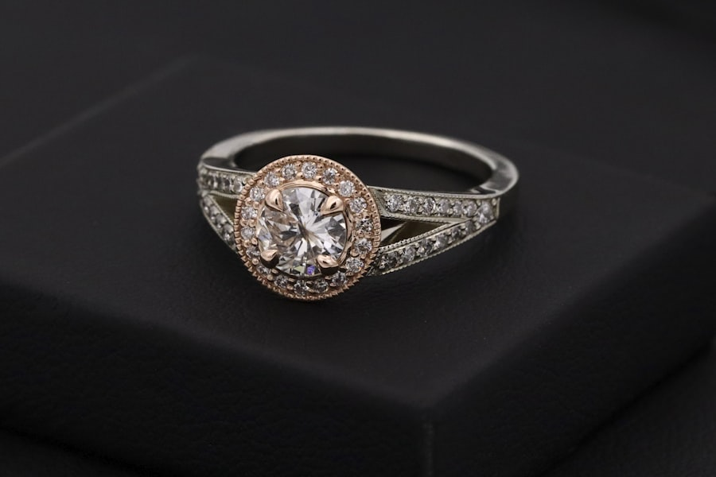
Por quê a Roleta? A mão direita fica em contato constante com a roleta e o material — o anel fica só na esquerda para reduzir risco operacional.
Pequenos, silenciosos e do mesmo “clima” visual.
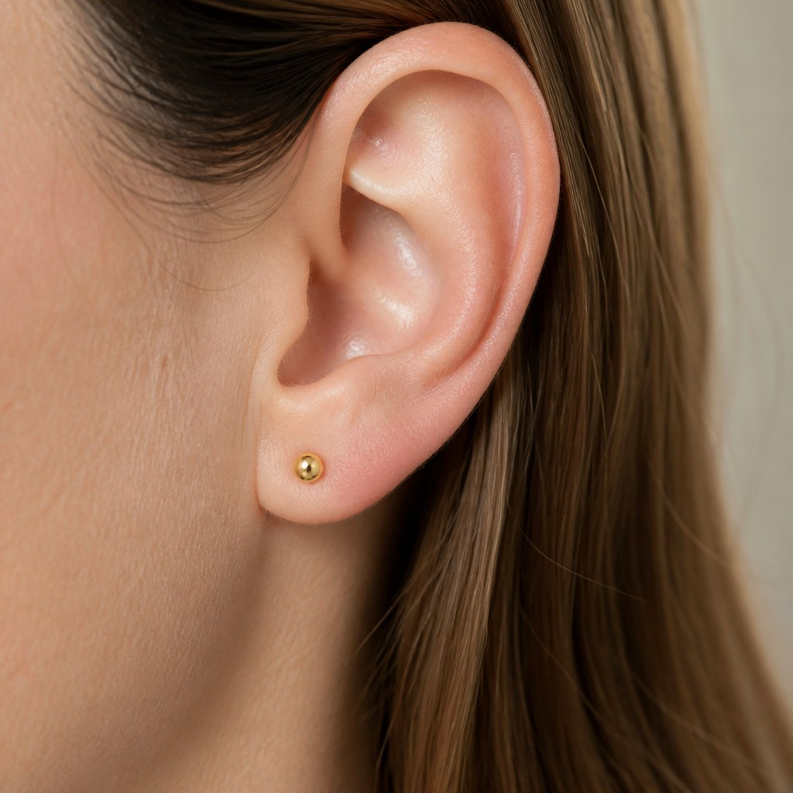
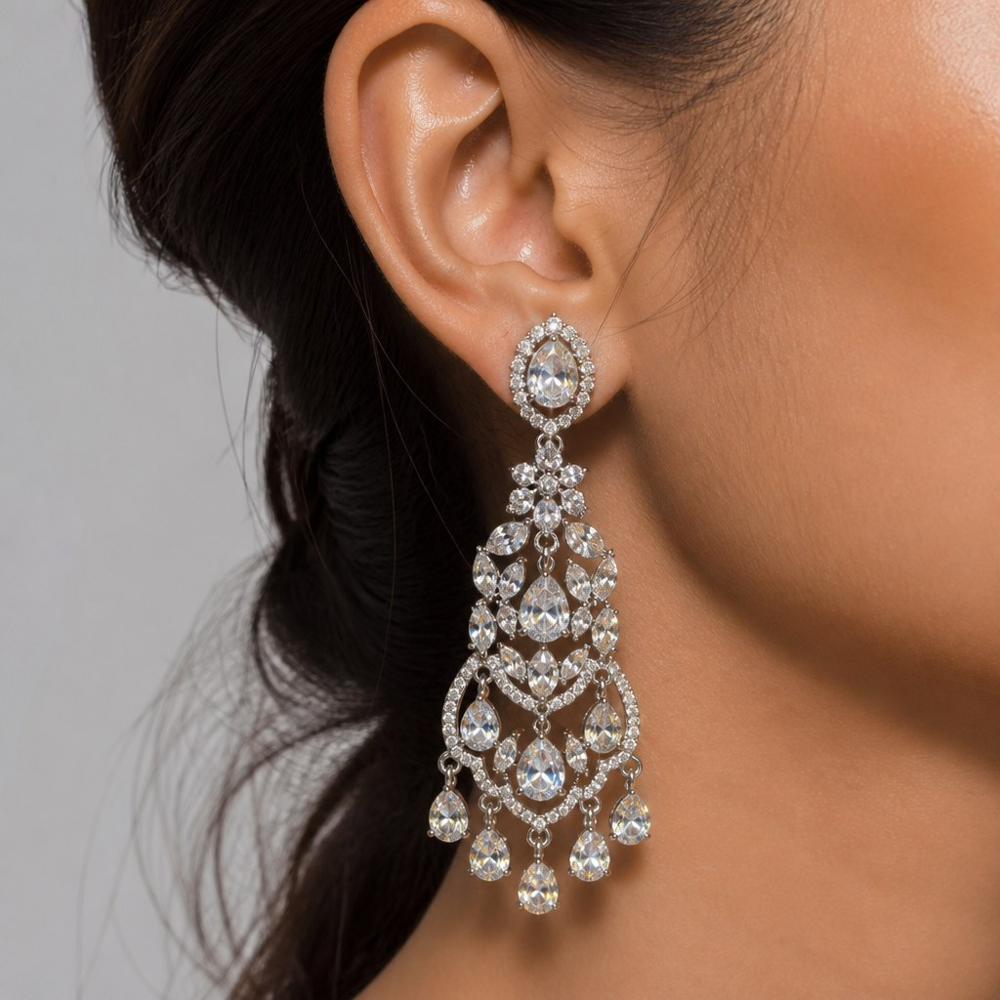
Dois pontos que valem para orelha e nariz — com exemplos de peça.
Não são permitidos piercings com strass, pedras, cristais ou outros elementos com brilho.
A peça deve ficar nessa faixa de diâmetro. Fora disso, não entra em mesa.
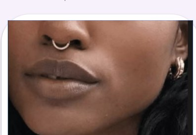
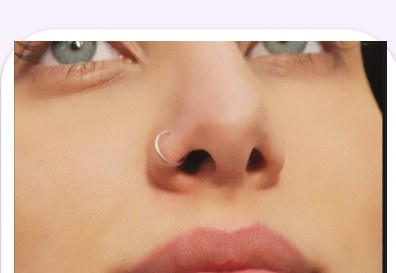
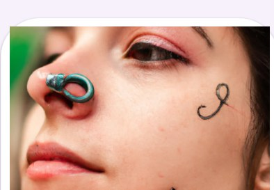
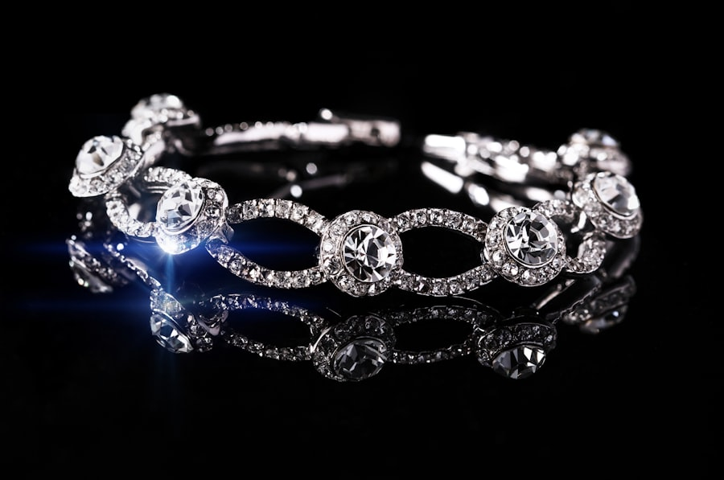
Checklist rápido: sem strass · sem pedras · diâmetro entre 0,6 e 0,8 cm.
Regiões permitidas desde que a peça siga as regras comuns (tamanho + sem brilho).
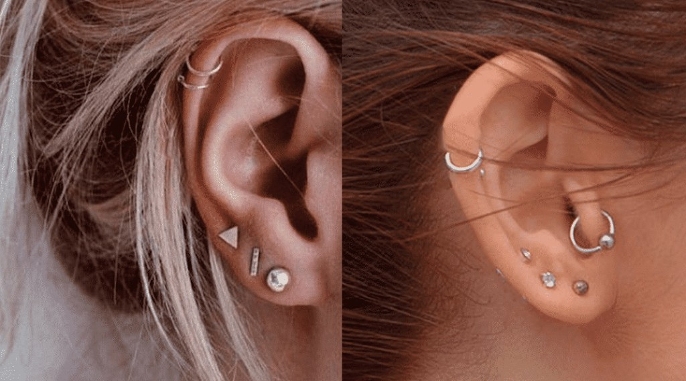
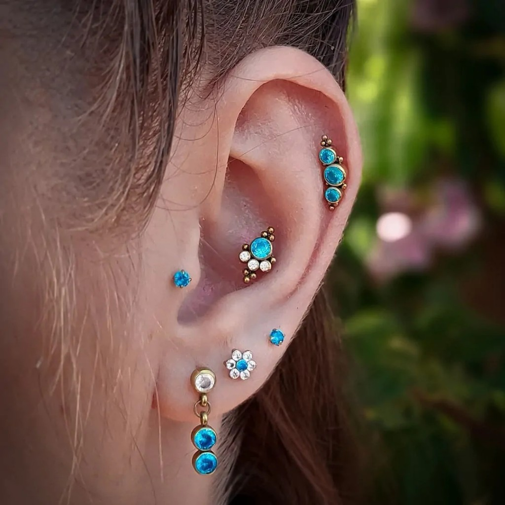
Atenção: o mapa anatômico só indica onde a peça pode ficar — não libera acabamento com brilho nem tamanho fora da faixa.
Septo e nostril discretos × peças grandes ou brilhantes.
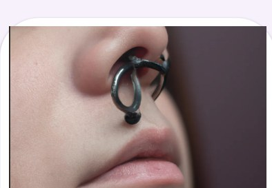
Resumo: se o piercing “domina” o rosto na câmera, é grande demais. Priorize aparência leve.
Menos é mais — e pulseira em mesa é zero.
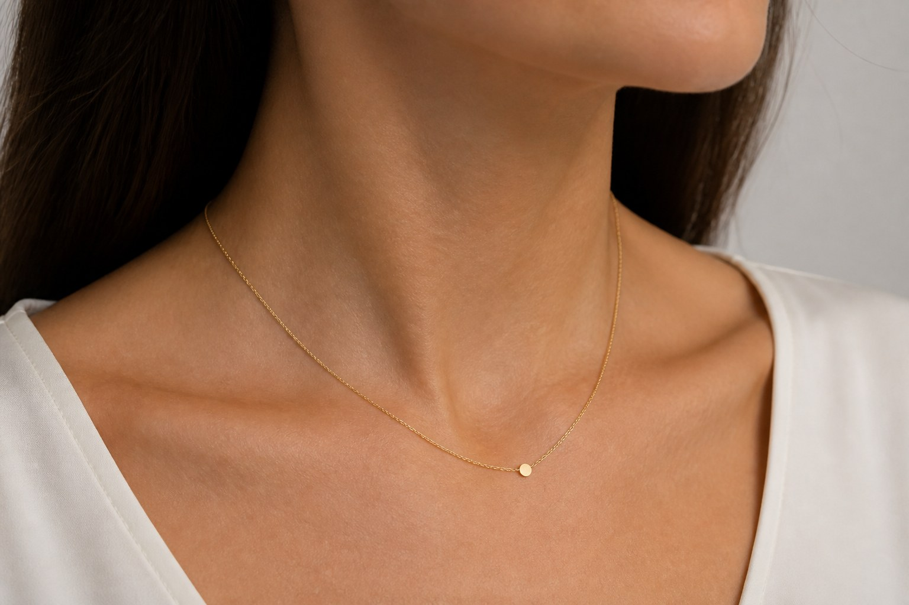
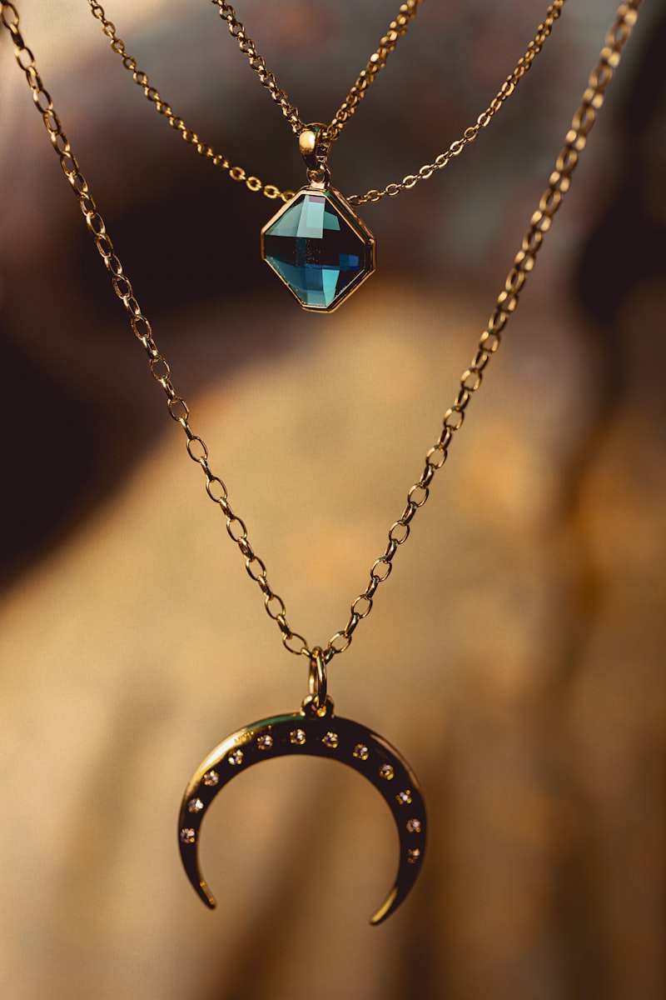
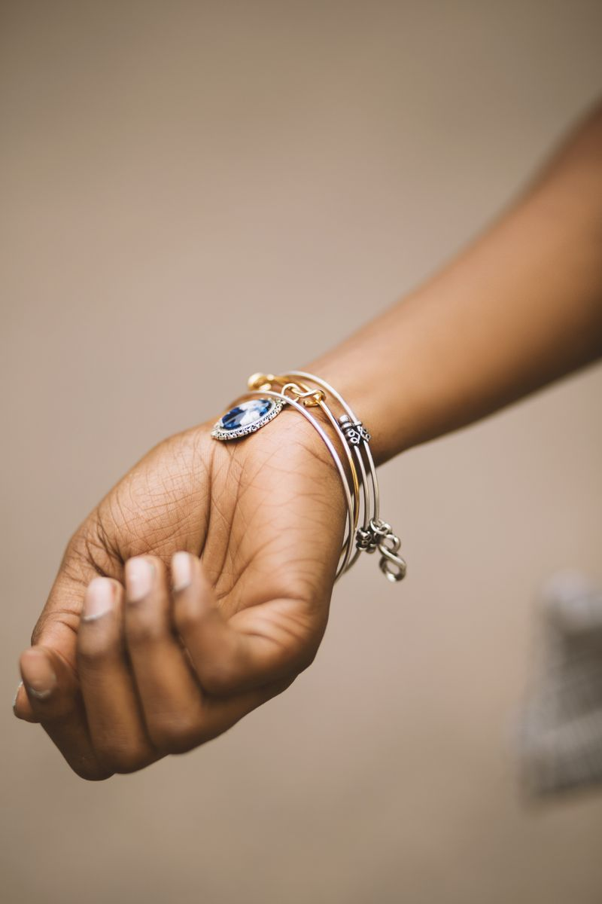
Proibições transversais: acessórios religiosos/ofensivos, peças barulhentas ou reflexivas, eletrônicos na área de jogos.
Uma conferência rápida ajuda a manter o padrão.
Discrição nos detalhes também faz parte de uma apresentação profissional.